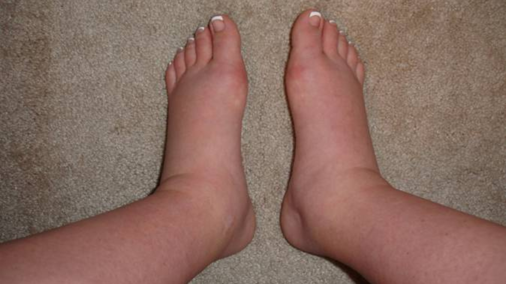
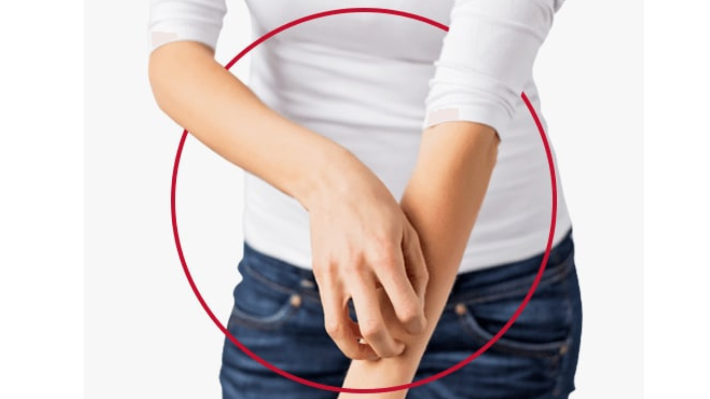

Siap Minum Obat, Siap Melangkah Sehat
Jangan beri celah bagi Filariasis. Satu dosis setiap tahun adalah benteng terbaik untuk menjaga langkahmu tetap kuat dan masa depan keluarga tetap cerah.
1. Mengenal POPM
Program Pemberian Obat Pencegahan Massal (POPM)
Program Pemberian Obat Pencegahan Massal (POPM) bertujuan untuk memutus rantai penularan kaki gajah di daerah endemis dengan memberikan obat secara serentak kepada seluruh penduduk.
2. Kombinasi 3 Obat (Regimen IDA)
(Geser untuk melihat jenis obat)

Ivermectin
Melumpuhkan anak cacing (mikrofilaria) agar mati secara bertahap

DEC
Membunuh anak cacing secara langsung dan membantu daya tahan tubuh

Albendazole
Memutus pasokan energi bagi cacing agar parasit tidak dapat bertahan hidup
Ketiga obat ini secara signifikan mempercepat proses eliminasi parasit dalam darah, sehingga rantai penularan di masyarakat dapat diputus secara lebih cepat dan tuntas.
3. Efek Samping Pengobatan
(Geser untuk melihat gejala)
Demam
Sakit Kepala
Nyeri Otot
Mual
Sakit Perut

Bengkak

Gatal-gatal
4. Penanganan Efek Samping Ringan
- Minum air putih minimal 2 liter per hari untuk membantu ginjal mengeluarkan sisa metabolisme dari cacing yang mati.
- Konsumsi Paracetamol (500 mg untuk dewasa, setiap 6-8 jam jika perlu). Parasetamol efektif meredakan reaksi imun ringan pasca-pengobatan.
- Hindari aktivitas fisik berat selama 24-48 jam pertama setelah minum obat untuk menurunkan beban kerja jantung dan otot.
- Pastikan obat filariasis diminum setelah makan kenyang. Lemak dalam makanan justru membantu penyerapan Albendazole, namun perut yang terisi melindungi mukosa lambung dari iritasi DEC.
- Konsumsi air jahe hangat dapat membantu meredakan mual secara alami tanpa berinteraksi negatif dengan obat cacing.
- Gunakan kompres es atau air dingin pada area yang bengkak/nyeri untuk mengurangi peradangan.
- Jika muncul gatal-gatal atau kemerahan pada kulit, dapat menggunakan antihistamin ringan seperti Cetirizine (10 mg, sekali sehari).
- Jika terjadi bengkak pada kaki, posisikan kaki lebih tinggi dari jantung saat berbaring.
5. Prinsip AMAN
Prinsip AMAN dalam penggunaan obat filariasis adalah pedoman untuk memastikan terapi berjalan efektif dan meminimalkan efek samping, terutama pada program Pemberian Obat Pencegahan Massal (POPM).
Aman Indikasi
Obat diberikan sesuai indikasi yang benar, yaitu pada penderita atau populasi di daerah endemis filariasis (kaki gajah).
Aman Dosis
Diberikan sesuai dosis yang dianjurkan berdasarkan umur dan/atau berat badan.
Aman Cara Pemberian
Diminum setelah makan untuk mengurangi efek samping. Dikunyah (untuk albendazole) sebelum ditelan. Di bawah pengawasan.
Aman Pemantauan
Memantau kemungkinan efek samping seperti demam, pusing, mual, atau reaksi alergi akibat kematian mikrofilaria.
Patuhi Dosis yang Ditentukan
Obat wajib diminum sesuai dosis yang dianjurkan petugas kesehatan berdasarkan umur dan berat badan. Ketepatan dosis sangat penting untuk menjamin efektivitas pembasmian parasit sekaligus meminimalkan risiko efek samping yang tidak diinginkan.